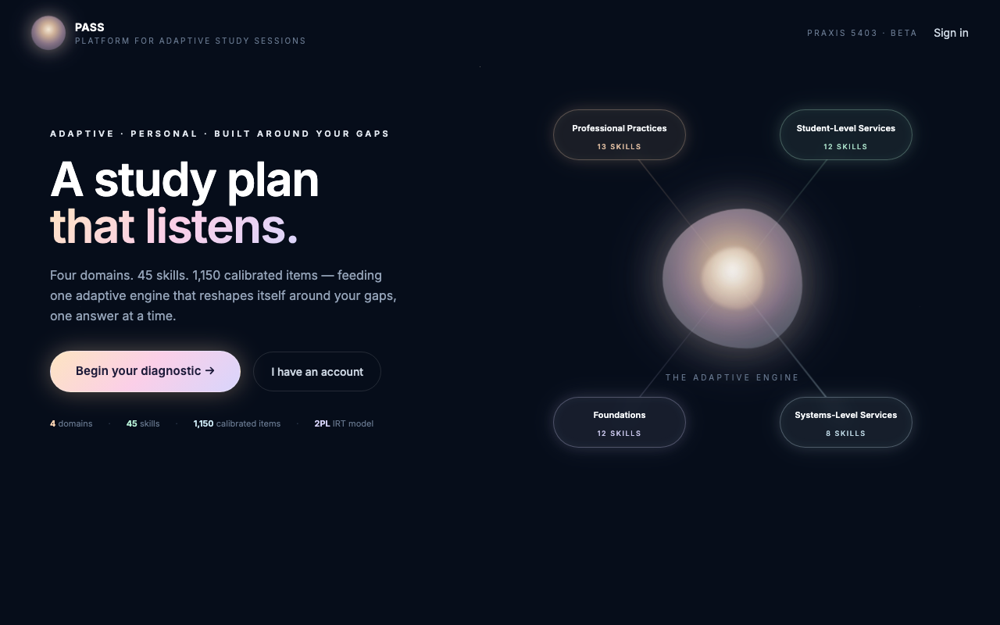
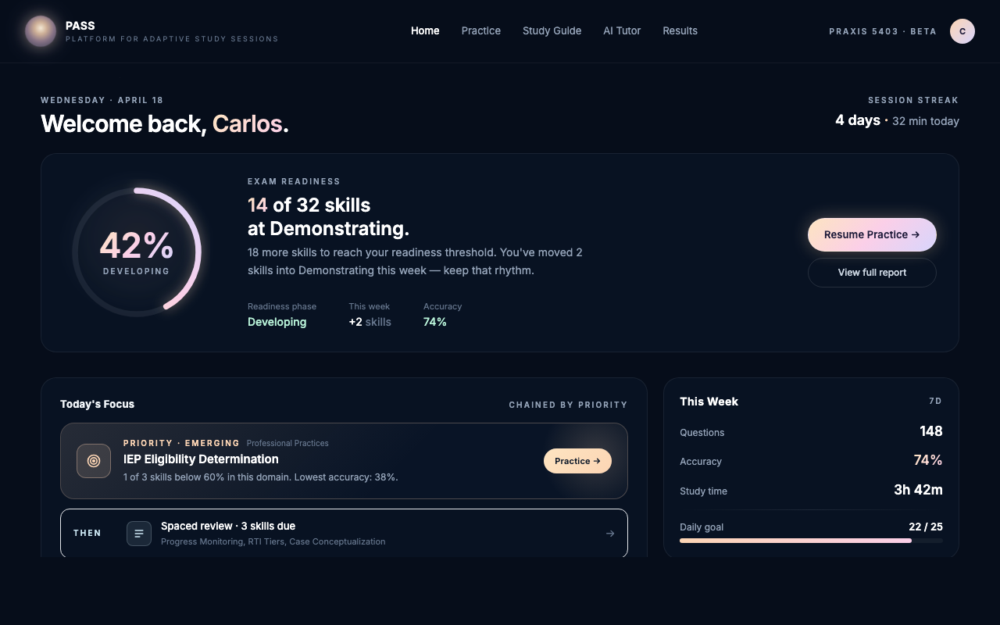
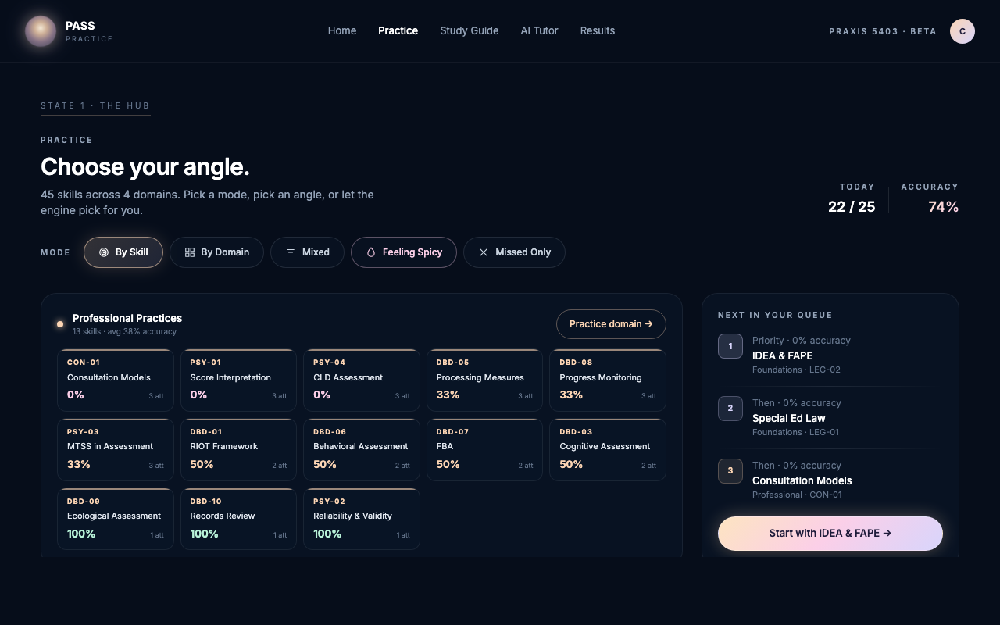
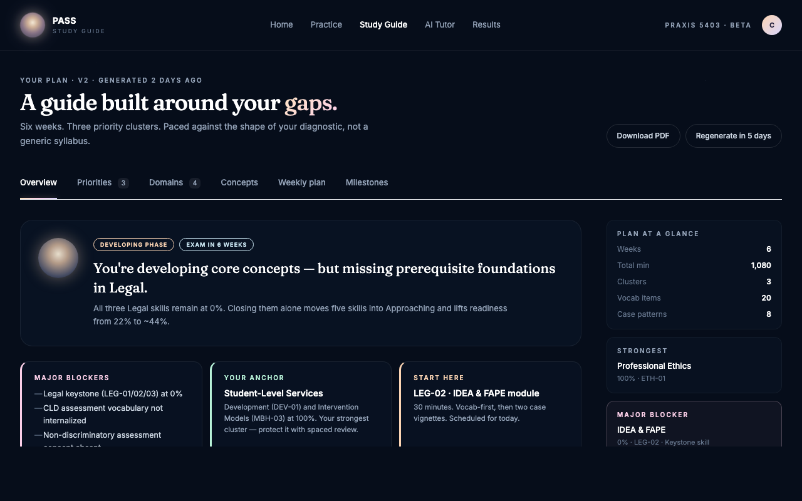
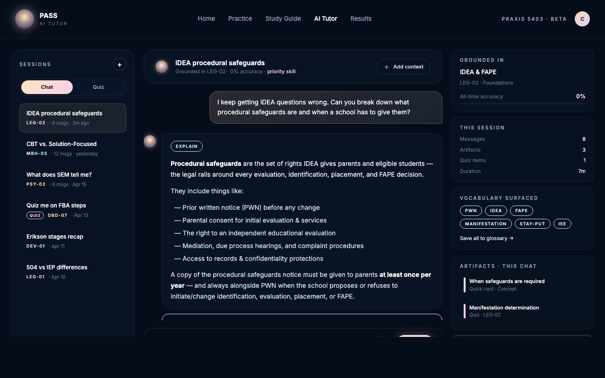
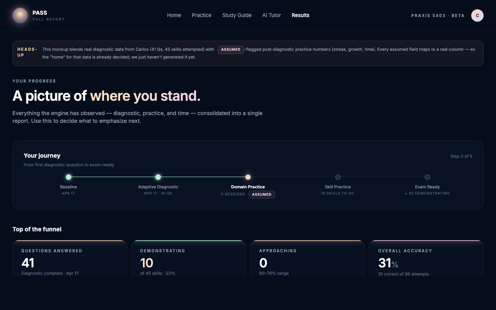

What we're shipping
Six screens, one aesthetic.
Every surface a candidate touches gets the atelier treatment — starfield backdrops, mini-orb, domain pastels, Fraunces display type, glass cards. Below: the six screens, with a live thumbnail of each.
6
Screens
1
Shared shell
4
Domain colors
0
New routes

Screen 1 of 6 · Entry point
Hero / landing.
What a new candidate sees before they're signed in. Morphing orb, 4-domain engine visualization, sign-in view-switcher.
Key moves
- "A study plan that listens." headline in Fraunces with gradient final line.
- Central orb with halo, pulse, and 4 domain pills feeding in (Professional · Student · Systems · Foundations).
- Hero CTAs: "Begin your diagnostic →" (new) and "I have an account" (returning).
- Stat row under hero (4 domains · 45 skills · 1,150 items · 2PL IRT) — needs plain-English pass on "2PL IRT".
- Responsive: engine reshuffles below copy on mobile.

Screen 2 of 6
Dashboard.
Post-diagnostic home. What the user sees every time they land.
Key moves
- Readiness arc (42% gradient ring) replaces the flat blue bar.
- Today's Focus hero with peach glow + two quieter "Then" rows.
- Domain Performance rows use the atelier palette with pulsing dots.
- Redemption card becomes an "eclipsed moon" with rose/lavender halo.
- Feature tiles become "The Toolshed" — glass cards, each in a domain hue.

Screen 3 of 6
Practice.
Hub (pick your angle) + in-session (one question at a time).
Key moves
- Skill-tile grid replaces the long list — each tile tops with domain color.
- Mode pills at top: By Skill / By Domain / Mixed / Spicy / Missed.
- Six alert types consolidate into one context-aware "Signal" card.
- Confidence lives in the question header as a 3-segment pill.
- Feedback panel gets a mint halo instead of a color-wash bar.

Screen 4 of 6
Study Guide.
Tabbed plan, schema-faithful. Every rendered field maps 1:1 to plan_document.
Key moves
- Gradient-underline tab strip; tabs actually tab (one visible at a time).
- Priority clusters as side-rail color cards (rose / peach / ice).
- Domain maps expand to reveal 4 field-lists + mastery indicator.
- Vocab cards click to reveal Why / Where / Confusion risk.
- Tactical instructions as 3 labeled buckets, not one numbered list.

Screen 5 of 6
AI Tutor.
3-column workspace: sessions · conversation · grounding rail.
Key moves
- Not chat-only — left sessions, center chat, right grounding rail.
- Mini-orb is the tutor avatar (orb = the product's voice).
- Artifact cards typed by kind ("Quick card · Concept", "Quiz · LEG-02").
- User bubbles warm (peach/lavender), tutor bubbles navy.
- Right rail shows what the model is grounded in — not a generic chatbot.

Screen 6 of 6
Results / Full Report.
Where Dashboard sends you for the deep dive. Carlos's real diagnostic data, with assumption badges on post-practice fields.
Key moves
- Journey timeline: Baseline → Diagnostic → Practice → Mastery → Ready.
- Stat cards with domain-color stripe tops; growth vs. baseline.
- Every bar: current fill + baseline ghost + 80% goal marker.
- Skill-dot grid (45 dots), each with its short code and color by tier.
- Top errors are narrative — one-line diagnosis per missed skill.
Before we wire
The order of operations.
Six screens, rolled out smallest-blast-radius first. Each step is its own PR.
Shell + tokens (foundation PR)
One CSS file, one font tag, one top-bar/sidebar refresh. No screen logic touched. Adds atelier palette vars, Fraunces, .glass utilities, starfield backdrop, mini-orb component.
Tutor
Smallest existing surface (~221 lines). 3-column workspace rewrite. No API changes, no schema changes. Great first test of the shared shell.
Dashboard
Most-seen surface. Props already wired — rewrite is mostly visual. Readiness arc + peach-glow priority + domain-colored rows.
Results / Full Report
Pure analytics. Journey timeline, baseline-ghost bars, skill-dot grid, narrative errors. No state side-effects.
Practice
Highest complexity (~1,051 lines). Consolidate alert stack, mode pills, skill-tile hub, session question card. Test carefully — state machine is dense.
Study Guide
Tabbed panel with JS tab switching. 9 schema sections → 6 tabs. Must test on netlify dev because the plan API is a background function.
Before step 0, resolve 2 things
- Inspect the staged
ContentContext.tsxdiff (+97/-97) — confirm it doesn't change prop shapes we depend on. - Decide what to do with the staged
LoginScreen.tsxrefactor (+123/-123) — ship it, park it, or fold it in.